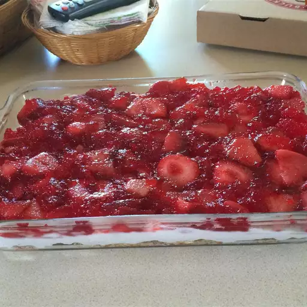

Pretzel dessert

Description
This is a festive, crunchy, and fruity dessert. The pretzels in this recipe provide a crust for the filling of gelatin and pineapple.
Ingredients:
- ½ (15 ounce) package pretzels, crushed
- 1 cup margarine, melted
- ¼ cup white sugar
- 1 (8 ounce) package cream cheese
- 1 (8 ounce) container frozen whipped topping, thawed
- 1 cup white sugar
- 2 cups boiling water
- 2 (10 ounce) packages frozen strawberries, thawed
- 1 (6 ounce) package strawberry flavored Jell-O®
Steps:
- Preheat oven to 400 degrees F (200 degrees C).
- In a medium bowl, combine crushed pretzels, melted margarine, and 1/4 cup sugar. Press mixture into a 9x13 inch baking pan.
- Bake for 8 to 10 minutes. Let cool.
- In a large mixing bowl, beat cream cheese, frozen whipped topping, and 1 cup sugar. Pour over pretzel crust.
- In a large saucepan, combine boiling water and strawberry-flavored gelatin; bring to a boil. Stir in frozen strawberries. When it begins to thicken, pour over cream cheese filling. Serve.
Back to Home page